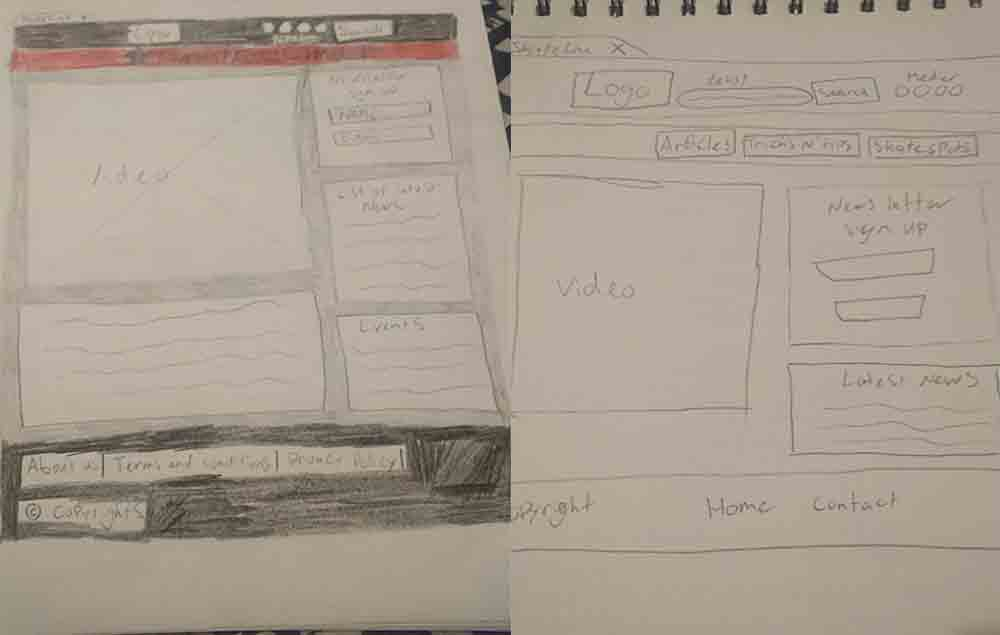

I case 1.2 fik vi til opgave at vi skulle se os selv som Content Creator hvor vi skulle skabe vores eget online magasin. Projektet skulle give os erfaring i at skrive content til en bestemt målgruppe. Vores målgruppe var medstuderende og var allerede givet til os og vi skulle skrive minimum 3 artikler.
Jeg skulle skabe en produktvision for mit magasin hvor jeg valgte hovedemnet skulle være skateboarding. Min baggrund lød på, at mit magasin skulle styrke kendskaben til skating i DK, der skulle være nogen tips og tricks til nystartede skatere og den skulle give en positiv styrkelse af skatekulturen i DK.
Opgaven lød også på, at vi selv skulle skabe et logo til vores online magasin, så jeg gik straks i gang med at skitsere nogen logoer og tog dem da videre til Photoshop og illustrator for at se dem færdige. Jeg vidste ikke helt hvilket logo jeg skulle bruge, da der var delte meninger om dem fra starten, så jeg sendte begge logoer rundt til at dem jeg kender som skater og bedte om deres mening. Og endte med at vælge det sort/hvide efter den fik klart flest anbefalinger.
Efter at have fået inspiration fra diverse andre online magasiner gik jeg i gang med at skitsere nogen Wireframes, så jeg kunne få en ide, af hvordan jeg gerne ville have mit online magasin til at se ud.
Til sidst gik jeg så i gang med at kode siden, og som forventet, så blev den ikke helt som forventet og som jeg havde designet den. Den blev ikke responsiv, da dette ikke var et krav. Efter at have fået sat siden op, kunne jeg så lege lidt med baggrunden og dens textur, hvor jeg endte med at vælge en beton textur da det passer bedst til hele skate området.
Set tilbage på den individuelle opgave hvor vi skulle skabe vores eget online magasin, så har jeg lært, hvor utroligt vigtigt et redskab som Trello kan være, til at administrere sin tid, så man får et overblik over hvad man skal lave og hvornår, så man ikke bruger mere tid end afskrevet på et emne.
Jeg har også lært, hvor meget tid man kan miste, hvis man ender med at kæmpe sig igennem et problem med kodningen i flere timer. Jeg havde en del problemer med at få tingene til at sidde hvor jeg ville, så det endte med, at de billeder jeg har inde under Skate Spots ikke blev lige store og endte med at se malplaceret ud.
Til en anden gang, så ville jeg nok gøre det som jeg har lært, nemlig at tage billederne ind i Photoshop og gøre dem samme størrelser, så jeg ikke får det samme problem med forskellige størrelser.